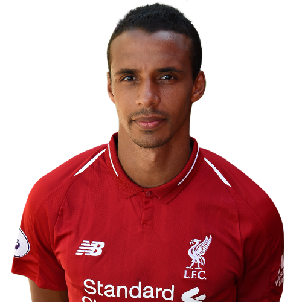

Matip
His life
Date of birth:
08.08.1991
Country:
Germany
His career
2009–2011:
Schalke 04 II
2011-2015:
Cameroon
2016-now:
Liverpool
His Career goals asists and games
Games:
166
Goals:
9
Asists:
6
His trophies with clubs
Club world cup (Liverpool)
Champions league (Liverpool)
UEFA Super cup (Liverpool)
Primer league (Liverpool)
FA cup (Liverpool)
League cup (Liverpool)
Supercup of Germany
The cup of Germany
His own trophies
Best player of the year 🏆(Shalke 04)
Best player of the in mounth 🏆(Liverpool)